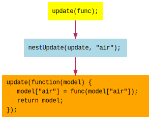

In the previous lesson, 11 - Components, we organized code into
components in the form of plain { model: ..., view: ... } objects. We augmented our nest
function to conveniently wrap the model and view functions with a nested property. That way,
we could construct the top-level model from each component's model(), and we could call each
component's view(model) function without worrying about which submodel to pass to which
component.
At this point, we've been issuing updates in the form of objects and producing the updated model
with a deep merge function. This is a fine approach; feel free to use it if it works well for
you. However, also know that there are other ways to issue updates and update the model. It's
your choice - the essence of the Meiosis pattern is the simple reactive loop: rendering
view(model), issuing updates, producing an updated model, and re-rendering the view.
Now, let's look at another way to issue updates: with functions.
update()In the Meiosis pattern setup code, we use scan with an accumulator function and a stream of
updates. The accumulator function receives the latest model, and what was passed to update().
Previously, those updates were plain objects, and we merged them into the model:
function(model, object) {
return _.merge(model, object);
}
Or simply _.merge.
Now, we'll change our strategy. We'll pass functions to update(). This is what's used in
the majority of the Meiosis examples, because it gives you a lot of flexibility.
Remember that functions are values that we can pass to other functions and return from other
functions. The functions that we'll pass to update() are functions that receive the latest
model and return the updated model.
For example, previously to set the temperature value to 23, we'd write:
update({ value: 23 });
Now, we'll write:
update(function(model) {
model.value = 23;
return model;
});
This makes our updates a stream of functions that update the model. Our accumulator function becomes:
function(model, func) {
return func(model);
}
That is, given the latest model and the incoming function func from the update stream,
producing the updated model is simply done by calling func(model).
The scan in our Meiosis setup code becomes:
var models = flyd.scan(function(model, func) {
return func(model);
}, app.model(), update);
Take a minute to let that sink in.
For nesting, the handling of our model and view functions remains the same. But what about
nesting updates? Previously, we had:
var nestUpdate = function(update, prop) {
return function(obj) {
var result = {};
result[prop] = obj;
update(result);
};
};
So when we called update({ data... }), nestUpdate would turn that into
update({ prop: { data... }}).
Now, we're calling update(func), where func gets the model and returns the updated model.
If we're nesting that at a property, we want to wrap func with a new function that gets the
unnested model and passes the nested model to func. Then, we assign the result of
calling func to the nested property of the model:

var nestUpdate = function(update, prop) {
return function(func) { // this is the nested update. take the incoming func, and
update(function(model) { // call the original update, and
model[prop] = func(model[prop]); // call func on the nested model
return model;
});
};
};
Now that we have nestUpdate ready, let's see how we issue updates.
To issue updates, we call update() and pass it a function. That function receives the latest
model and returns the updated model. Here are our increase and changeUnits event handlers:
var increase = function(amount) {
return function(_event) {
update(function(model) {
model.value += amount;
return model;
});
};
};
var changeUnits = function(_event) {
update(function(model) {
var newUnits = model.units === "C" ? "F" : "C";
model.value = convert(model.value, newUnits);
model.units = newUnits;
return model;
});
};
Notice how we make changes to the model and then return it. It's fine to mutate the model object and return it, but you could also use code that returns a new object as the updated model.
Previously, we had to pass the model to the event handler functions so that it could be used to calculate the updated values. Now, we automatically get the latest model since it is passed to our function. We can thus simplify the calls that we make to event handlers.
With the plain object updates, we needed to pass the model to the event handler functions:
<button onClick={increase(model, 1)}>Increase</button>
<button onClick={increase(model,-1)}>Decrease</button>
<button onClick={changeUnits(model)}>Change Units</button>
Now that we receive the model in the function that we pass to update(), we can simplify the
calls to the event handlers. We no longer need to pass the model:
<button onClick={increase( 1)}>Increase</button>
<button onClick={increase(-1)}>Decrease</button>
<button onClick={changeUnits}>Change Units</button>
Passing functions to update() gives us a lot of flexibility. It's easy to modify the model in
any way that we want, using any logic that we want, and so on, within the function. The function
always gets passed the latest model, can make the necessary changes, and return the updated model.
Here is the full example:
temperatures. Issue updates by calling update() and passing
functions that update the model. Verify that the nesting works.When you are ready, continue on to 13 - Object Function Update.